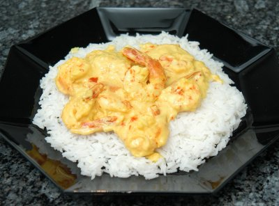

| Vorspeise oder Hauptgericht für 4 Personen: | |
| 600g | Krevettenschwänze, geschält |
| 3 | Knoblauchzehen |
| 4 | rote und grüne Chilischoten |
| 4 El | Sonnenblumenöl |
| 2 | Limonen |
| 10g | frischen Ingwer |
| 1/2 Tl | Kurkuma (Gelbwurz) |
| 1 dl | Kokosmilch |
| 1 Stäusschen | Koriander |
Marinieren: Die Krevetten unter fliessendem kalten Wasser waschen, trocken tupfen und in eine Form für die Marinade legen.
Eine Knoblauchzehe fein hacken, den frischen Ingwer raffeln und dazu geben.
Die roten Chilischoten halbieren, Samen und Scheidewände entfernen, fein würfeln und alles zusammen mit Kurkuma und etwas Meersalz mischen.
Den Saft der Limonen darunter ziehen, über die Krevetten verteilen und 30 Minuten (oder länger) in dem Kühlschrank stellen.
Kochen:
Beilage zubereiten!
Für die Kokossauce die restlichen zwei Knoblauchzehen schälen und etwas zerdrücken. Die grünen Chilischoten halbieren, Samen und Scheidewände entfernen sowie die Hälfte des Koriandersträusschens fein hacken.
Inzwischen die Krevettenschwänze aus der Marinade nehmen und gut abtropfen lassen. Das Öl in einer grossen Bratpfanne erhitzen und die Krevetten darin auf beiden Seiten 1 bis 2 Minuten braten und beiseite stellen.
Den zerdrückten Knoblauch in die Pfanne geben und goldgelb rösten. Die Kokosnussmilch dazugiessen, das Koriandergrün und die Chiliwürfel unterrühren und alles 5 Minuten köcheln lassen. Mit wenig Salz abschmecken, die Krevetten auf vorgewärmten Tellern anrichten, mit der Sauce begiessen und mit dem restlichen Koriander garnieren.
Dazu passen Trockenreis oder Basmati-Reis.
Migros, Rezeptbroschüre
Am 1.6.2005 von RE zubereitet. Ich nahm grosse Krevetten (ca. 7 cm) und die hätten auch länger marinieren dürfen. Die Sauce war zu fade. Nur etwas Knoblauch und ein paar Chili-Stücke in der Kokossauce überzeugte mich nicht. Ich gab noch etwas Kurkuma bei und es war ganz OK. Eine rote Thai-Chilisauce wäre natürlich besser dazu gewesen.
Am 13.2.2010 schmeckte es ganz gut. RE
@LINKBACK_TAG@ @WAKELOCK@